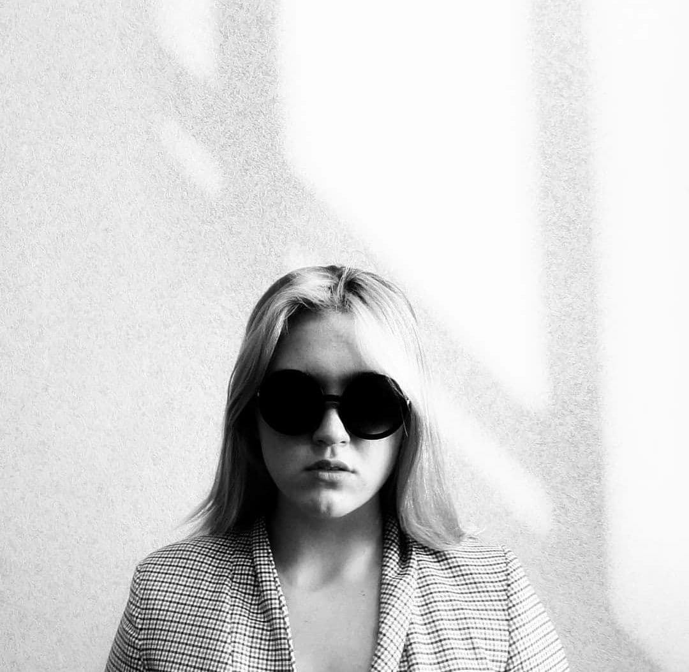

Інформація про мене
Про себе я можу розповісти те, що мене звати Ігнатенко Тетяна Юріївна.Мені 18 років.
В мене є молодший на 8 років брат. Все своє життя я живу у Харкові, але народилась на Сумщині.
Я з 9 класу знала, що пов'яжу своє життя з ІТ. Я бачила себе в професії бізнес-аналітика.
Я знаю, що треба написати багато тексту, але не знаю, що вигадати, тому щось пишу.
Зараз я навчаюсь на першому курсі в Харківському національному університеті будівництва та архітектури.
Я вивчаю інформаційні системи та технології.
Спеціалісти з інформаційних технологій є користувачами вже створених технологій, найчастіше націлених на розв’язання задач,
пов’язаних з бізнесом, освітою, медициною та ще багатьма сферами діяльності людини.
ІТ-фахівці частіше взаємодіють із клієнтами та колегами, ніж працюють суто на створення коду.
Вони володіють необхідними навичками для ефективної співпраці з замовниками, аналізу існуючих проблем, роз’яснення можливих шляхів вирішення тощо.
Моя сім'я
Моя сім'я велика і дружня. Мою маму звати Олена, вона народилась 30 червеня 1981. Вона працює керівником відділення ПриватБанку.
Мого батька звати Юрій, він народився 7 червня 1976. Він працює в фірмі TECO.
В мене також є брат-Артем. Він навчається в школі, у 4 класі. Йому 10 років. Він займається WorkOut.
